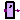

The Delay package collects the delay blocks which are used in many components. Both transport and inertial delay are offered for scalar connectors. The most advanced component is the sensitive inertial delay the delay time of which is chosen in dependency of the signal values. This component is also available for vector valued input.
Extends from Modelica.Icons.Package (Icon for standard packages).| Name | Description |
|---|---|
| DelayParams | Definition of delay parameters |
|  TransportDelay | Transport delay with initial parameter |
| InertialDelay | Inertial delay with initial parameter |
| InertialDelaySensitive | Provide the input as output if it holds its value for a specific amount of time |
| InertialDelaySensitiveVector | Delay of a vector of digital signals |
DelayParams is a partial model for providing delay times and inertial values. It is used in components of the package Gates which need the same parameters. The partial model does not have any behavior or equations.
| Name | Description |
|---|---|
| tLH | Rise inertial delay [s] |
| tHL | Fall inertial delay [s] |
| y0 | Initial value of output |
Provide the input as output exactly delayed by Tdel. If time less than Tdel the initial value initout holds.
Extends from D.Interfaces.SISO (Single input, single output).
| Name | Description |
|---|---|
| delayTime | delay time [s] |
| y0 | initial value of output |
| Name | Description |
|---|---|
| y | Connector of Digital output signal |
Provides the input as output delayed by Tdel if the input holds its value for a longer time than Tdel. If time is less than Tdel the initial value initout holds.
Extends from D.Interfaces.SISO (Single input, single output).
| Name | Description |
|---|---|
| delayTime | Minimum time to hold value [s] |
| y0 | Initial value of output y |
| Name | Description |
|---|---|
| x | Connector of Digital input signal |
| y | Connector of Digital output signal |
Provides the input as output delayed by Tdel if the input holds its value for a longer time than Tdel.
If the time is less than Tdel the initial value initout holds.
The delay Tdel depends on the values of the signal change. To calculate Tdel, the delaymap specified in
Digital.Tables is used. If the corresponding value is 1, then tLH is used, if it is -1, then tHL
is used, if it is zero, the input is not delayed.
| Name | Description |
|---|---|
| tLH | rise inertial delay [s] |
| tHL | fall inertial delay [s] |
| y0 | initial value of output |
The delay element Inertial Delay Sensitive is applied to a vector of n signals. The parameters tLH and tHL are valid for each of the n signals.
| Name | Description |
|---|---|
| tHL | High->Low delay [s] |
| tLH | Low->High delay [s] |
| n | Data width |
| Name | Description |
|---|---|
| x[n] | |
| y[n] |